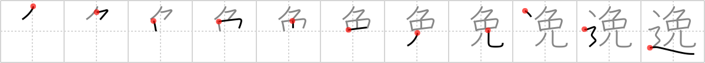

逸
← →
elude

Reading:
On-Yomi: イツ — Kun-Yomi: そ.れる、そ.らす、はぐ.れる
Heisig story:
Rabbit . . . road.
Koohii stories:
1) [fuaburisu] 8-1-2006(114): Tip : as a primitive rabbit becomes Bugs Bunny of Looney Tunes fame. Here Bugs Bunny eludes Elmer Fudd the hunter, once again.
2) [Virtua_Leaf] 5-2-2008(100): Bugs Bunny eludes Elmer Fudd by pretending to be roadkill.
3) [radical_tyro] 20-7-2007(55): Word play to differentiate elude/evade: elude ~= e-lewd. Alice is following Mr. Rabbit on the road. Mr. Rabbit flashes her in a lewd way and disappears, completely eluding her.
| 4) [Johnnyltn] 20-2-2007(36): I like to maintain the primitive as excuse. Here a speedster is caught trying to elude the police. He stands outside his car bowing over and over saying ご免なさい、ご免なさい、ご免なさい。 | Note: I've actually witnessed this very event happening here in Japan. It is a common thing that people here will do when "caught" by the police…you'll see them sometimes bowing furiously apologizing over and over for their "bad" behavior. |
5) [b0ng0] 17-2-2009(15): A rabbit on the road has a hard time eluding cars.